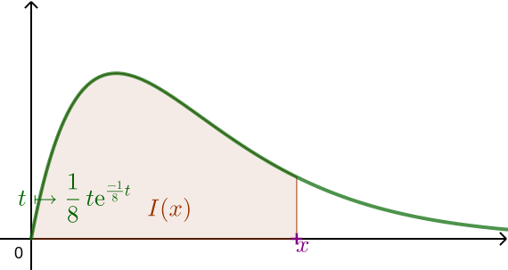

BTS - Probabilités 2 - TD2
Partie A : Étude des dimensions des tablettes
On s'intéresse à une entreprise qui fabrique des tablettes tactiles avec un écran de 9,7 pouces et des étuis pour ces tablettes.
Le service packaging de l'entreprise réalise une étude sur la longueur et la largeur des tablettes fabriquées afin qu'elles restent compatibles avec les dimensions des étuis produits.
On note :
- \(L\) la variable aléatoire qui associe à chaque tablette fabriquée sa longueur en millimètre (mm) ;
- \(l\) la variable aléatoire qui associe à chaque tablette fabriquée sa largeur en millimètre (mm).
La longueur d'une tablette est compatible avec celle de son étui lorsqu'elle est comprise entre 241,9 mm et 243,1 mm. On admet que la variable aléatoire \(L\) suit la loi normale de moyenne 242,5 et d'écart-type 0,2.
-
- Calculer \(P\left(\, 241,9\,\leqslant\, L\leqslant 243,1\, \right)\). Arrondir à \(10^{-4}\).
- Interpréter la valeur obtenue.
- On admet que la variable aléatoire \(l\) suit la loi normale de moyenne 166,8 et d'écart-type 0,1. Pour mettre en place la norme de fabrication relative à la largeur des étuis, le service packaging recherche le plus petit nombre décimal à deux chiffres après la virgule, noté \(\alpha\), tel que :
\(\displaystyle P\left(\, 166,8-\alpha\,\leqslant\, l\leqslant 166,8+\alpha\, \right)>0,995\)
En précisant rapidement la méthode utilisée, déterminer la valeur du nombre \(\alpha\) cherché et l'intervalle \([166,8-\alpha\,;\,166,8+\alpha]\) associé.
Partie B : Étude d'un défaut de l'étui
L'étui est fabriqué en cuir recouvert de polyuréthane appelé «cuir PU». Un certain nombre d'étuis a été retourné à l'entreprise pour défaut de rigidité. L'enquête statistique conduite par le service qualité de l'entreprise permet de considérer que la probabilité \(p\) qu'un étui comporte un défaut de rigidité est égale à 0,015.
On prélève un lot de 100 étuis. La production de l'entreprise est suffisamment importante pour que l'on puisse assimiler ce prélèvement à 100 tirages aléatoires avec remise d'un étui.
On appelle \(R\) la variable aléatoire qui, à chaque lot ainsi prélevé, associe le nombre d'étuis présentant un défaut de rigidité contenus dans le lot.
- Sans justifier, indiquer la loi suivie par la variable aléatoire \(R\) ainsi que ses paramètres.
- Donner la valeur de \(P(R=2)\), arrondie à \(10^{-3}\), puis interpréter ce résultat.
- Peut-on affirmer que la probabilité qu'un lot de \(100\) étuis prélevés dans le production comporte plus de \(5\) étuis présentant un défaut de rigidité est inférieure à \(0,02\) ? Justifier la réponse.
- Dans un lot de 100 étuis, en moyenne, combien sont défectueux ?
- Dans un lot, sachant qu'au moins six étuis ont un défaut de rigidité, quelle est la probabilité qu'ont ait seulement, exactement 6 étuis présentant ce défaut de rigidité ?
Partie C : Étude des délais de livraison (10 points)
La production journalière des tablettes et de leurs étuis étant constante, le stock est suffisamment important et les délais de livraison ne dépendent que du nombre de commandes qui sont à traiter.
On note \(D\) la variable aléatoire qui, à chaque commande, associe le nombre de jours écoulés entre le jour où le client a effectué sa commande et le jour où il a été livré.
La variable aléatoire \(D\) permet donc d'étudier les délais de livraison de l'entreprise.
On admet que pour tout réel positif ou nul \(\alpha\) :
\(\displaystyle P(0\leqslant D\leqslant \alpha) = \int_0^\alpha\,\dfrac{1}{8}\textrm{e}^{\frac{-1}{8}t}\,\textrm{d}t\)
- À quelle loi fait-on référence ici ?
- Quelle est la probabilité que le client reçoive sa livraison dans les 15 jours suivant sa commande ? Écrire les étapes du calcul effectué et arrondir la réponse à \(10^{-3}\).
- Pour tout réel positif \(x\) on pose : \(I(x)=\displaystyle\int_0^x\,\dfrac{1}{8}t\textrm{e}^{\frac{-1}{8}t}\,\textrm{d}t\)

- Soit \(G\) la fonction définie, pour tout réel positif \(t\), par \(G(t)=-t\textrm{e}^{\frac{-1}{8}t}-8\textrm{e}^{\frac{-1}{8}t}\).
Montrer que la fonction \(G\) est une primitive de \(t \mapsto \frac{1}{8}t\textrm{e}^{\frac{-1}{8}t}\).
- En déduire l'expression de \(I(x)\) en fonction de \(x\).
- On admet que l'espérance de la variable aléatoire \(D\), que l'on notera \(\mathbb{E}(D)\), est définie par :
\(\displaystyle\mathbb{E}(D)=\lim_{x\to+\infty} I(x)\)
- Donner la valeur de \(\mathbb{E}(D)\). Aucune justification n'est attendue.
- Que représente la valeur \(\mathbb{E}(D)\) pour le client ?
Compléments
Certains exercices sont extraits de ce
polycopié.
(Dans un jeu télé). Un candidat se trouve devant 3 portes
fermées. Derrière une de ces portes, il y a une superbe voiture à gagner,
et un poireau dans les deux autres. Le candidat doit choisir une porte au
hasard (sans l’ouvrir). L’animateur ouvre alors une autre porte contenant un
poireau.
Que devrait faire le candidat : garder sa porte ou changer d’avis et choisir
la dernière porte ? Justifier.
Un fermier veut faire de la statistique sur sa production d’oeufs
de poule. Il sait que sur les deux mille oeufs recueillis dans la journée, 104
avaient un poids inférieur à 53 grammes et 130 supérieur à 63 grammes.
- En admettant que la variable aléatoire égale à la masse en gramme d’un
oeuf suit une loi normale, donner une estimation des paramètres de cette
loi.
- En déduire le poids moyen d’un oeuf.
- Combien peut-il espérer vendre de très gros oeufs dans l’année (un très
gros oeuf (XL) pèse plus de 71 grammes).